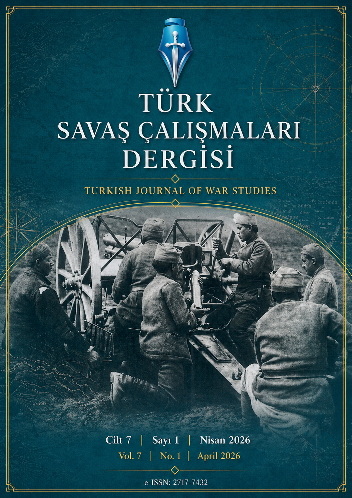

Dergi Hakkında
About the Journal
Yayın hayatına 2020 yılında başlayan Turkish Journal of War Studies, silahlı çatışma ve savaş kavramının nedenleri, temel dinamikleri ve ulusal-uluslararası boyutları konularında bilimsel yayınlara yer veren hakemli bir akademik dergidir.
Founded in 2020, Turkish Journal of War Studies is a peer-reviewed academic journal publishing scholarly work on the causes, dynamics, and national and international dimensions of armed conflict and war.
Derginin temel alanlarını askeri tarih, siyasal şiddetin ekonomi politiği ve sosyokültürel temelleri, jeopolitik ve askeri sosyoloji oluşturmaktadır. Dergi yılda iki sayı, Türkçe ve İngilizce dillerinde yayımlanmaktadır.
Core areas include military history, the political economy and sociocultural underpinnings of political violence, geopolitics, and military sociology. The journal is published twice a year in Turkish and English.

Temel Araştırma Alanları
Core Research Areas
Askeri Tarih
Military History
Yakın çağ ve çağdaş askeri tarih, Osmanlı askeri tarihi ve savaşların tarihsel analizi.
Modern and contemporary military history, Ottoman military history, and historical analysis of wars.
Siyasal Şiddetin Ekonomi Politiği
Political Economy of Violence
Çatışmaların ekonomik temelleri, kaynak savaşları ve silahlı şiddetin finansmanı.
Economic foundations of conflict, resource wars, and the financing of armed violence.
Jeopolitik ve Strateji
Geopolitics & Strategy
Bölgesel güç rekabeti, stratejik çalışmalar, uluslararası güvenlik ve savunma politikaları.
Regional power competition, strategic studies, international security, and defense policy.
Askeri Sosyoloji
Military Sociology
Toplum-ordu ilişkileri, silahlı kuvvetlerin sosyokültürel temelleri ve toplumsal dinamikler.
Civil-military relations, sociocultural foundations of armed forces, and social dynamics in conflict.
Arşiv
| YılYear | Cilt / SayıVolume / Issue | Yayın TarihiPublication Date | ErişimAccess |
|---|---|---|---|
| 2026 | Cilt 7, Sayı 1Vol 7, Issue 1 | Nisan 2026April 2026 | YakındaUpcoming |
| 2025 | Cilt 6, Sayı 2Vol 6, Issue 2 | 31.10.2025 | GörüntüleView |
| Cilt 6, Sayı 1Vol 6, Issue 1 | 30.04.2025 | GörüntüleView | |
| 2024 | Cilt 5, Sayı 2Vol 5, Issue 2 | 01.11.2024 | GörüntüleView |
| Cilt 5, Sayı 1Vol 5, Issue 1 | 30.04.2024 | GörüntüleView | |
| 2023 | Cilt 4, Sayı 2Vol 4, Issue 2 | 30.10.2023 | GörüntüleView |
| Cilt 4, Sayı 1Vol 4, Issue 1 | 30.04.2023 | GörüntüleView | |
| 2022 | Cilt 3, Sayı 2Vol 3, Issue 2 | 30.10.2022 | GörüntüleView |
| Cilt 3, Sayı 1Vol 3, Issue 1 | 30.04.2022 | GörüntüleView | |
| 2021 | Cilt 2, Sayı 2Vol 2, Issue 2 | 25.10.2021 | GörüntüleView |
| Cilt 2, Sayı 1Vol 2, Issue 1 | 30.04.2021 | GörüntüleView | |
| 2020 | Cilt 1, Sayı 2Vol 1, Issue 2 | 31.10.2020 | GörüntüleView |
| Cilt 1, Sayı 1Vol 1, Issue 1 | 27.04.2020 | GörüntüleView |
Hakkında
Yayın hayatına 2020 yılında başlayan Turkish Journal of War Studies, silahlı çatışma ve savaş kavramının nedenleri, temel dinamikleri ve ulusal-uluslararası boyutları konularında bilimsel yayınlara yer veren hakemli bir akademik dergidir.
Founded in 2020, Turkish Journal of War Studies is a peer-reviewed, open-access academic journal dedicated to the scholarly study of armed conflict and war — their causes, core dynamics, and national and international dimensions.
Amaç ve Kapsam
Aims and Scope
Derginin temel alanlarını askeri tarih, siyasal şiddetin ekonomi politiği ve sosyokültürel temelleri, jeopolitik ve askeri sosyoloji gibi konular oluşturmaktadır.
Core areas include military history, the political economy and sociocultural underpinnings of political violence, geopolitics, and military sociology.
Yayın Periyodu
Publication Frequency
Dergi yılda iki sayı olarak yayımlanmakta olup Türkçe ve İngilizce dillerinde çalışmalar kabul edilmektedir.
The journal is published twice a year and accepts manuscripts in both Turkish and English.
Ücret Politikası
Fee Policy
TJWS makale gönderim, değerlendirme ve yayım süreçlerinin hiçbirisinde herhangi bir ücret talep etmemektedir.
TJWS charges no fees at any stage of the submission, review, or publication process.
Açık Erişim
Open Access
Budapeşte Açık Erişim Girişiminin tanımlaması ve COPE Davranış Kuralları esas alınmaktadır.
The journal follows the Budapest Open Access Initiative definition and the COPE Code of Conduct.
Dergi Kurulları
Editör Kurulu
Editors
5Son güncelleme: 1 Kasım 2025
Last updated: 1 November 2025
Danışma Kurulu
Advisory Board
9Ulusal ve uluslararası akademisyenlerden oluşmaktadır
Comprising national and international scholars
Yazım Kuralları
TJWS'ye gönderilecek makalelerin aşağıdaki biçimsel ve içeriksel kurallara uygun olması gerekmektedir.
Manuscripts submitted to TJWS must comply with the following formal and substantive requirements.
Genel Kurallar
General Rules
- Makaleler Türkçe veya İngilizce yazılmış olmalıdır.
- Manuscripts must be written in Turkish or English.
- Çalışmalar daha önce yayımlanmamış ve başka bir dergide değerlendirme sürecinde olmamalıdır.
- Submissions must not have been previously published or be under review elsewhere.
- Tüm makaleler çift-kör hakemlik sürecinden geçmektedir.
- All manuscripts undergo double-blind peer review.
- Makale gönderimi yalnızca DergiPark sistemi üzerinden yapılmalıdır.
- Submissions must be made exclusively via the DergiPark platform.
Biçim Gereksinimleri
Formatting Requirements
- Makale uzunluğu dipnotlar ve kaynakça dahil 8.000–12.000 kelime arasında olmalıdır.
- Manuscripts should be 8,000–12,000 words including footnotes and bibliography.
- Yazı tipi: Times New Roman, 12 punto, 1.5 satır aralığı.
- Font: Times New Roman, 12pt, 1.5 line spacing.
- Türkçe ve İngilizce özet (150–200 kelime) ve en az 5 anahtar kelime eklenmelidir.
- Both Turkish and English abstracts (150–200 words) and at least 5 keywords are required.
- Atıf sistemi: Chicago tarzı dipnot ve kaynakça sistemi kullanılmalıdır.
- Citation style: Chicago footnote and bibliography system must be used.
Etik Kurul İzni
Ethics Approval
İnsan ya da hayvan denekli araştırmalarda etik kurul onayı zorunludur.
Research involving human or animal subjects requires ethics committee approval.
Etik İlkeler ve Yayın Politikası
Türk Savaş Çalışmaları Dergisi, COPE tarafından belirlenen davranış kurallarını benimsemektedir.
Turkish Journal of War Studies adheres to the Code of Conduct established by the Committee on Publication Ethics (COPE).
Yazar Sorumlulukları
Author Responsibilities
- Yazarlar çalışmalarının özgün olduğunu beyan etmelidir.
- Authors must certify that their work is original.
- Tüm yazarların ismi makalede yer almalı; katkısı olmayanlar yazar gösterilemez.
- All contributing authors must be listed; persons who have not contributed may not be listed.
- Çıkar çatışması varsa editöre bildirilmelidir.
- Any conflict of interest must be disclosed to the editor.
Açık Erişim Politikası
Open Access Policy
Tüm makaleler BOAI ilkeleri çerçevesinde ücretsiz erişime sunulmaktadır. Creative Commons BY-NC 4.0 lisansı uygulanmaktadır.
All articles are freely available under BOAI principles, licensed under Creative Commons BY-NC 4.0.
Makale Gönderimi
Türk Savaş Çalışmaları Dergisi'ne makale gönderimleri DergiPark platformu üzerinden gerçekleştirilmektedir.
Manuscript submissions are made exclusively through the DergiPark platform.
Makale göndermek için DergiPark sistemine giriş yapınız
Log in to DergiPark to submit your manuscript
Makale Gönder → Submit Article →Değerlendirme Süreci
Review Process
Gönderilen makaleler önce ön incelemeye, ardından çift-kör hakemlik sürecine alınır.
Submissions undergo initial editorial screening, then double-blind peer review.
İletişim
Baş Editör
Editor-in-Chief
Prof. Dr. Mesut UYAR
University of New South Wales
Canberra, AvustralyaAustralia
ORCID: 0000-0003-0673-7604
Dergi Platformu
Journal Platform
Makale gönderimi ve süreç takibi için DergiPark sistemini kullanınız.
dergipark.org.tr/tr/pub/tws
For submission and tracking, please use the DergiPark platform.
dergipark.org.tr/en/pub/tws